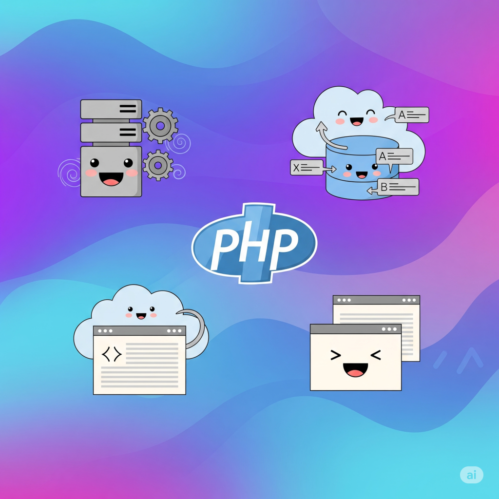

HTML
HTML(HyperText Markup Language)은 웹 페이지를 만들기 위한 표준 마크업 언어입니다. 웹 페이지의 구조와 내용을 정의하며, 제목, 단락, 링크, 이미지 등의 요소를 태그를 사용하여 표현합니다. HTML은 웹 브라우저에 의해 해석되어 사용자에게 시각적으로 보여지며, CSS와 JavaScript와 함께 사용되어 웹 사이트의 디자인과 기능을 구현합니다.
HTML, CSS, JavaScript, PHP에 대한 간단한 소개
HTML(HyperText Markup Language)은 웹 페이지를 만들기 위한 표준 마크업 언어입니다. 웹 페이지의 구조와 내용을 정의하며, 제목, 단락, 링크, 이미지 등의 요소를 태그를 사용하여 표현합니다. HTML은 웹 브라우저에 의해 해석되어 사용자에게 시각적으로 보여지며, CSS와 JavaScript와 함께 사용되어 웹 사이트의 디자인과 기능을 구현합니다.

CSS(Cascading Style Sheets)는 HTML이나 XML로 작성된 문서의 표현을 기술하는 스타일 시트 언어입니다. 웹 페이지의 레이아웃, 색상, 글꼴 등 시각적 디자인을 담당하며, HTML이 콘텐츠의 구조를 정의한다면 CSS는 그 콘텐츠의 외관을 꾸밉니다. 반응형 디자인을 통해 다양한 기기와 화면 크기에 적응하는 웹 사이트를 만들 수 있습니다.

JavaScript는 웹 페이지를 동적으로 만들기 위해 사용되는 프로그래밍 언어입니다. 사용자와의 상호작용, 애니메이션, 폼 유효성 검사, 비동기 데이터 통신 등 다양한 기능을 구현할 수 있습니다. 최근에는 Node.js를 통해 서버 측 개발에도 사용되고 있으며, React, Vue, Angular와 같은 프레임워크로 복잡한 웹 애플리케이션을 구축하는 데 널리 활용됩니다.

PHP(Hypertext Preprocessor)는 서버 측에서 실행되는 스크립트 언어로, 동적 웹 페이지를 생성하는 데 주로 사용됩니다. 데이터베이스와의 연동, 세션 관리, 파일 처리 등 서버 측 기능을 구현할 수 있으며, WordPress, Drupal, Joomla와 같은 인기 있는 콘텐츠 관리 시스템의 기반이 되고 있습니다. PHP는 HTML 코드 안에 삽입되어 실행되며, 클라이언트에게 완성된 HTML을 전송합니다.